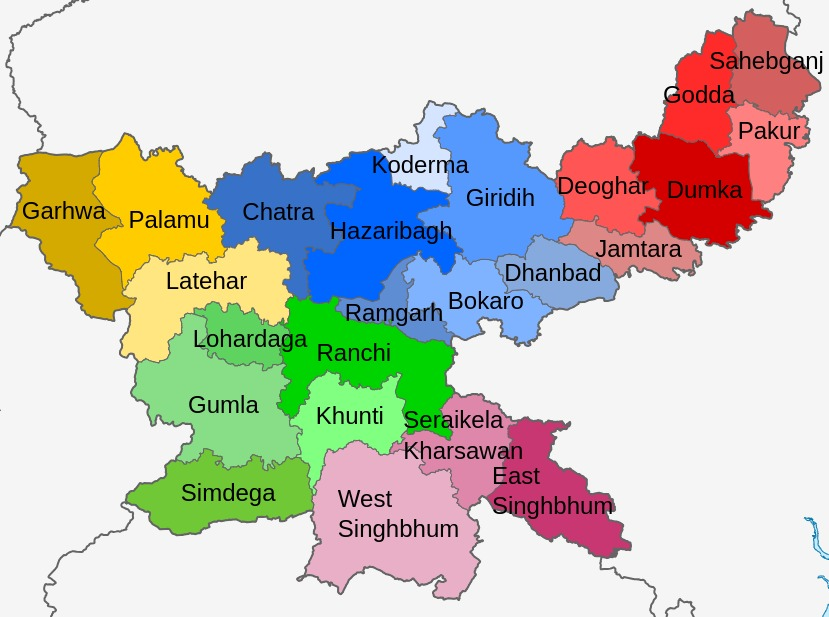

| Name: | Jharkhand |
|---|---|
| Capital: | Ranchi |
| Language: | Hindi, Bengali, Maithili, Santali, and others |
| Chief Minister: | Hemant Soren |
| Total Districts: | 24 |
| Population: | ~33 million (as per 2011 census) |
| Formation: | 15 November 2000 |
| Area: | 79,714 km² (15th largest in India) |
| Borders: | Bihar, Uttar Pradesh, Chhattisgarh, Odisha, West Bengal |
| Coastline: | None (Landlocked State) |
Know more